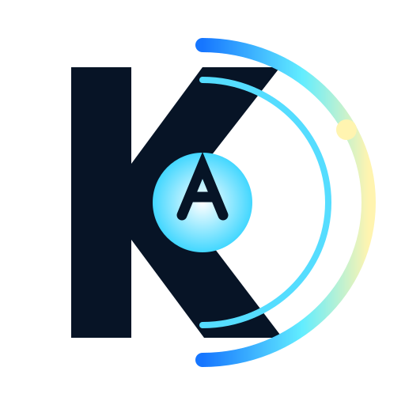
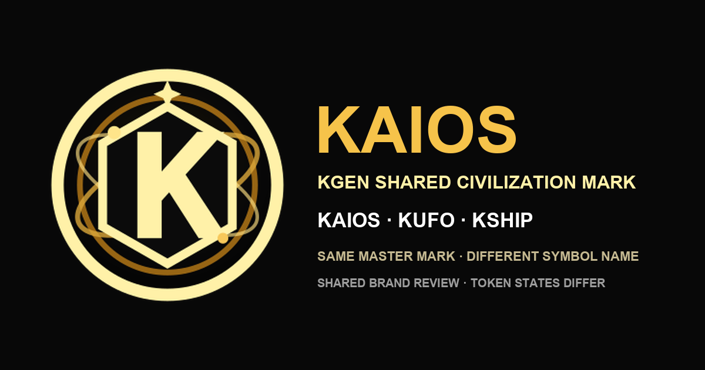
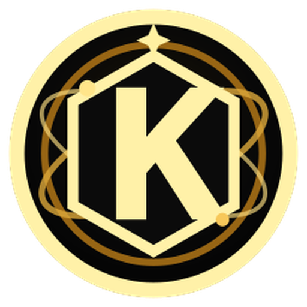
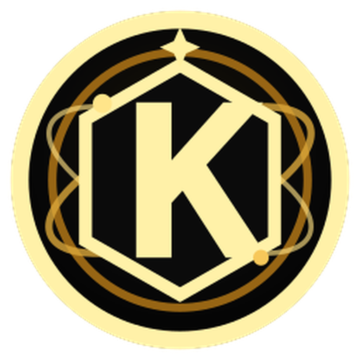
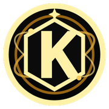

KAIOS shared master markREVIEW CANDIDATE · NOT CURRENT · NO WEBSITE REPLACEMENT
KGEN FAMILY MARK
KAIOS、KUFO、KSHIP 共用 GitHub 既有 KGEN 黑金母圖，只以 token symbol／名稱區分；鏈上合約地址與代幣身分仍各自獨立。

 KAIOS token mark
KAIOS token mark
KUFO token mark
KSHIP token mark
KAIOS Apple touch icon